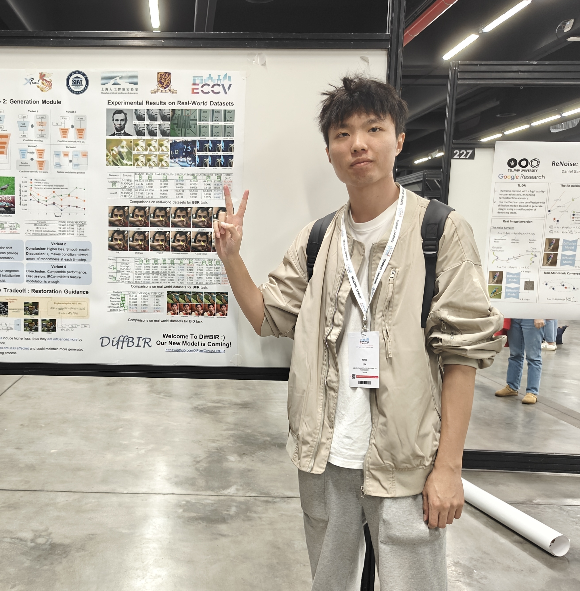
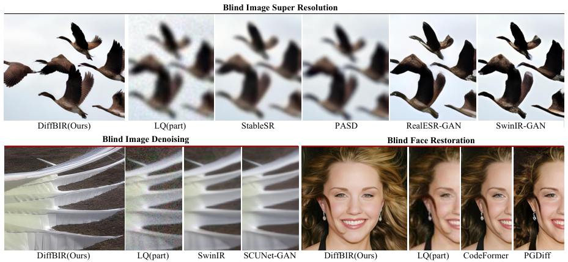
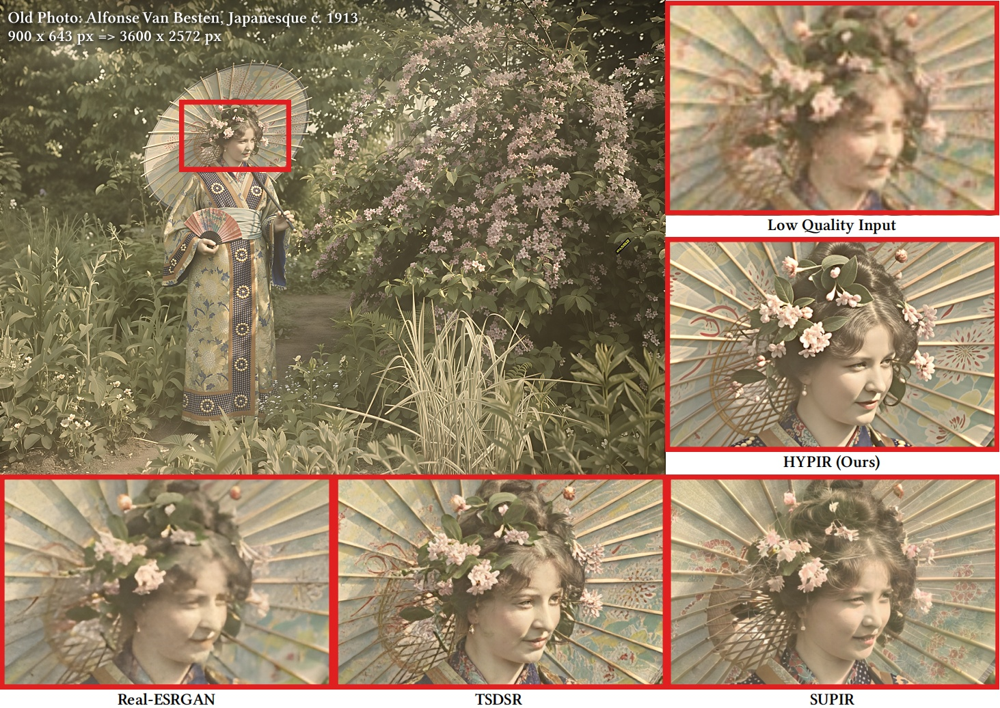
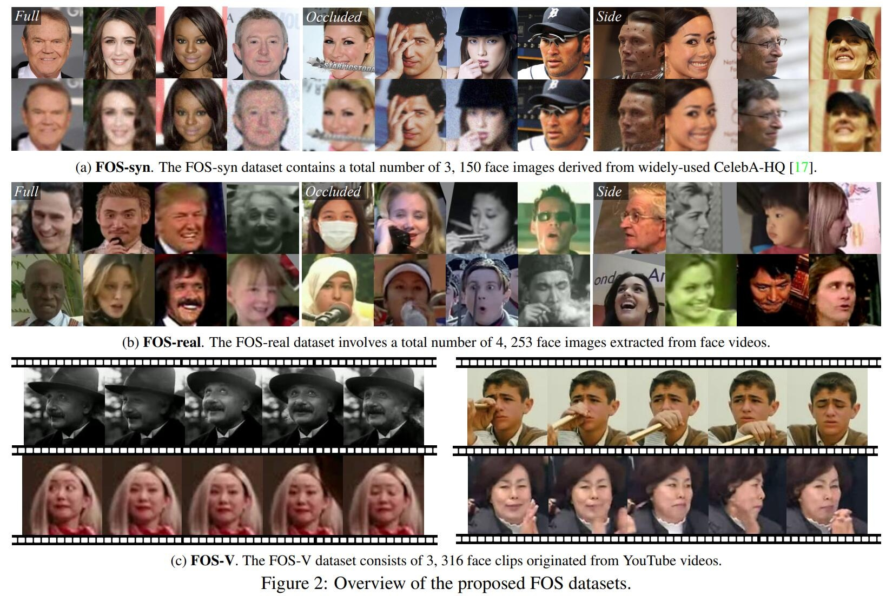
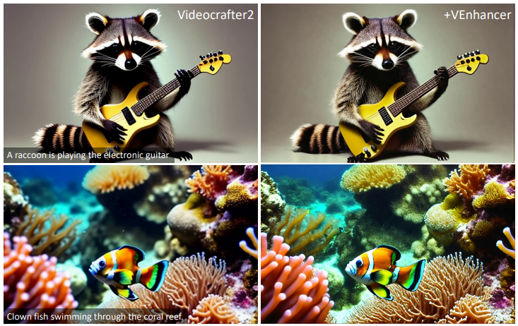
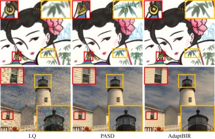

|
I am a second-year graduate student at XPixelGroup, Shenzhen Institutes of Advanced Technology, Chinese Academy of Sciences. I am supervised by Prof. Chao Dong. I also work closely with Dr. Jinjin Gu. Prior to that, I received my B.Eng. from the Tianjin University (TJU) in 2023. My current research interest mainly lies in image restoration, image super-resolution.
CV /
Google
Scholar
/
Github
|
 |
{kind=link}
|
[2024.07] One paper to appear in ECCV
2024. See you in Milan. |
|
*: Equal Contribution, †: Corresponding Author |
|  |
Xinqi Lin*, Jingwen He*, Ziyan Chen, Zhaoyang Lyu, Bo Dai, Fanghua Yu, Wanli Ouyang, Yu Qiao, Chao Dong† European Conference on Computer Vision (ECCV), 2024 paper / project page / code We present DiffBIR, a general restoration pipeline that could handle different blind image restoration tasks in a unified framework. |
|  |
Xinqi Lin, Fanghua Yu, Jinfan Hu, Zhiyuan You, Wu Shi, Jimmy S. Ren, Jinjin Gu†, Chao Dong† arXiv, 2025 paper / project page / code We propose a simple and effective method, HYPIR, to achieve a good balance between restoration quality, fidelity, and speed. |
|  |
Ziyan Chen*, Jingwen He*, Xinqi Lin, Yu Qiao, Chao Dong† Computer Vision and Pattern Recognition Workshops (CVPRW), 2024 paper / project page / code We introduced new real-world datasets named FOS with a taxonomy of "Full, Occluded, and Side" faces from mainly video frames to study the applicability of current methods on videos. |
|  |
Jingwen He, Tianfan Xue, Dongyang Liu, Xinqi Lin, Peng Gao, Dahua Lin, Yu Qiao, Wanli Ouyang†, Ziwei Liu arXiv, 2024 paper / project page / code We present VEnhancer, a generative space-time enhancement framework that improves the existing text-to-video results by adding more details in spatial domain and synthetic detailed motion in temporal domain. |
|  |
Yingqi Liu, Jingwen He, Yihao Liu, Xinqi Lin, Fanghua Yu, Jinfan Hu, Yu Qiao, Chao Dong† Pattern Recognition(PR), 2024 paper AdaptBIR aims to help diffusion models get their footing in the low-level vision field, solving the pain point of insufficient fidelity. |
|
|

|
M.Eng. @ University of Chinese Academy of Sciences
Sept. 2023 - Present GPA: 3.6 / 4.0 Advisor: Prof. Chao Dong |
|
B.Eng. @ Tianjin University
Sept. 2019 - Jun. 2023 GPA: 3.84 / 4.0 Advisor: Prof. Junjie Chen |
|
Template from JonBarron |